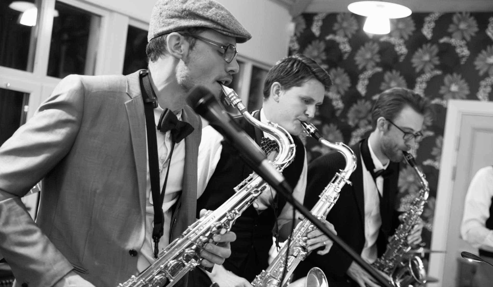
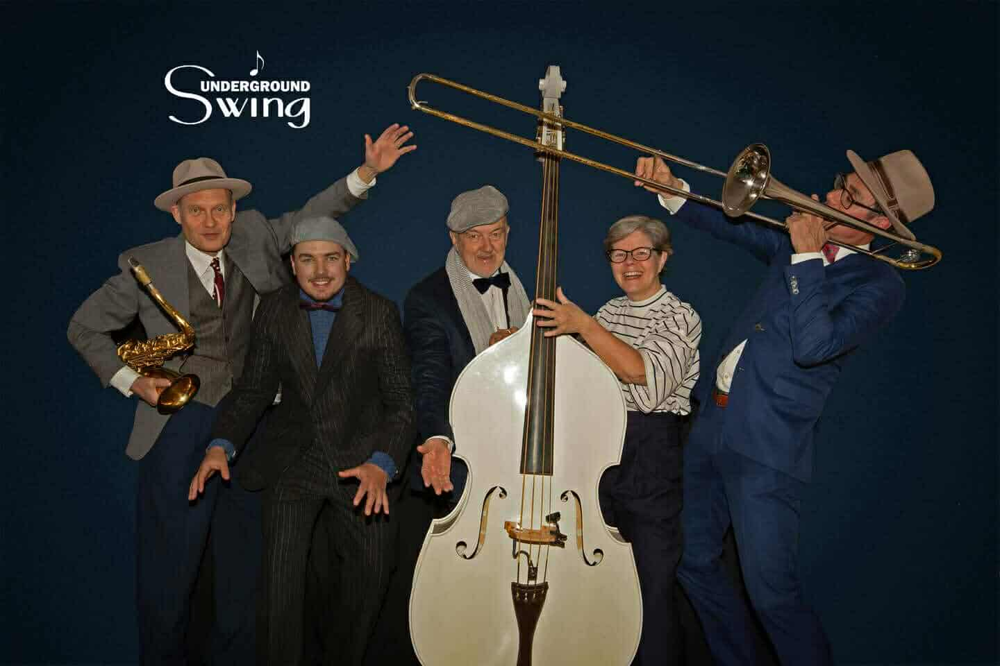

Varmt välkommen till Karlskrona December Swing 2026!
Karlskrona December Swing hålls den 4-6 december och är en helg fylld av Lindy hop. Kurs genomförs på lördag och söndag, med dans till liveband på fredag kväll och lördag kväll.
Fredag kväll
Socialdans i Filmsalen, Gullberna Park, Karlskrona, till Arnö Revival Stompers och Swing-DJ.

Taster: Prova på Lindy hop för nybörjare kl 19:00-20:00. För dina vänner som inte testat Lindy hop tidigare och för dig som vill prova på den “andra” rollen, eller för dig som bara vill värma upp inför dansen.
Dans! 20:00-23:30. Registrering från kl. 18:30.
Lördag kväll
Socialdans i Filmsalen, Gullberna Park, Karlskrona, till Underground Swing och Swing-DJ.

Taster: 19:00-20:00 To Be Determined
Dans! 20:00-23.30
Workshop lördag och söndag
En nivå; Lindy hop (dansat lindy hop i minst ett år)
Registrering sker på lördag 9:30-10:00, i entrén till Filmsalen, Gullberna Park, Karlskrona.
Lördag: Klasserna kommer att vara i Filmsalen med start kl 10:00. Sista lektionen beräknas vara slut innan kl 16:00. Lunch ca 12:00-13:15.
Söndag: Klasserna kommer att vara i Filmsalen med start kl 10:00. Sista lektionen beräknas vara slut innan kl 16:00. Lunch ca 12:00-13:15.
Lärare: Charlie och Rebecka Decavita
Pris
Workshop + socialdans: 1100 SEK (normalpris) / 800 SEK (student/pensionär)
Socialdans, per kväll: 150 SEK (normalpris) / 100 SEK (student/pensionär)
Skriv att du är student/pensionär som en kommentar i workshop-anmälan, och glöm inte att ta med studentlegitimation till registreringen!
Karlskrona December Swing anordnas av Tipsy Dance Club med stöd av Karlskrona Kommun, Musik i Blekinge samt Sisu-Idrottsutbildarna, Blekinge